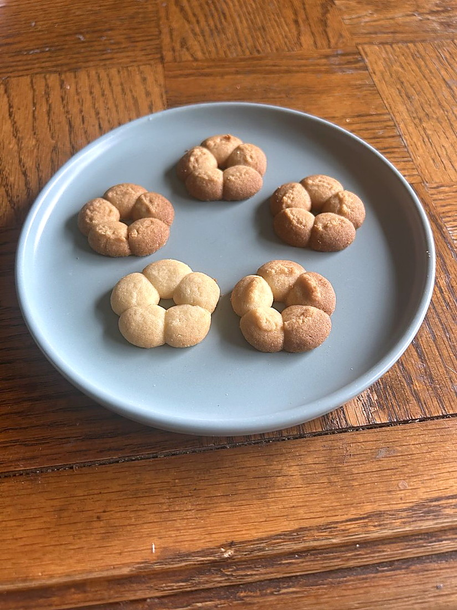

Baking / Butter cookies
Milk Powder Butter Cookies

- Yield
- 40 cookies
- Rest
- 30 min chill after piping
- Oven
- 350F, 15 min
- Source
- Cakes by MK, cakesbymk.com
- Energy Cost
- $1.55 (15 min bake plus 30 min, 3.5 kW at 59 cents/kWh)
Scorecard
4.5/5Appearance
4.75/5Texture
4.75/5Flavor
easyTechnique
4.75/5Overall
Ingredients
Batch
- All-purpose flour: 260 g
- Salt: 2 g
- Unsalted butter, softened: 226 g
- Granulated sugar: 100 g
- Egg yolks, room temperature: 2
- Vanilla extract: 10 ml
- Milk powder: 33 g
Method
- Cream the softened butter with the sugar 3 minutes until light. Stop there, over-creaming hurts it.
- Mix in the yolks, vanilla and milk powder on low, scraping down.
- Add the flour and salt, mix low to medium only until combined.
- Press the dough with a spatula to knock out air bubbles, then mix smooth.
- Pipe rosettes through a large tip (Ateco 849 or 827) onto parchment.
- Chill the piped cookies 30 minutes until firm.
- Bake one tray at a time at 350F for about 15 minutes. More browning means richer flavour and a crisper edge.
- Cool on the tray 30 minutes before moving them.
Notes
- Milk powder is the whole idea, and it is what separates this from every other butter cookie in the group.
- If the dough is too firm to pipe, fold in a teaspoon of room-temperature milk.
- Texture peaks the day after baking, so make it ahead.
- Keeps a week easily, up to 2 to 3 weeks airtight.
Learnings
Highest score in the collection so far at 4.75 overall, beating both 4.5 chocolate chip leaders. Texture and flavor both 4.75, appearance 4.5, and still rated easy, so it is the best return on effort of anything tested.